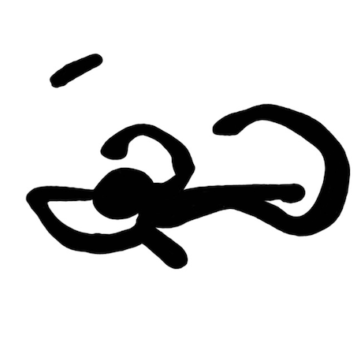

Ignacio Paulin
I am a master’s student in Biological Sciences at the University of Konstanz, with a focus on understanding animal behavior and its evolutionary drivers. My research interests include mating selection, decision-making processes, and the evolution of ornamental and morphological traits. I work primarily in aquatic ecosystems, using guppies (Poecilia reticulata) in Trinidad and Tobago as a key study system.
My main goal is to uncover how behaviors have been shaped through evolutionary history, combining extensive fieldwork in natural populations with the development and application of novel quantitative analysis methods.
Currently, I am a researcher in the Behavioral Evolution Research Group at the Max Planck Institute of Animal Behavior, where I contribute to explore the evolutionary ecology of animal behavior in diverse natural contexts.
